1과목: 직업상담학
1. 융(Jung)이 제안한 4단계 치료과정을 순서대로 나열한 것은?
2. 직업상담의 과정 중 역할사정에서 상호역할관계를 사정하는 방법이 아닌 것은?
3. 직업상담자와 내담자 사이에 직업상담관계를 협의하는 내용에 대한 설명으로 틀린 것은?
4. 수퍼(Super)의 발달적 직업상담에서 의사결정에 이르는 단계를 바르게 나열한 것은?
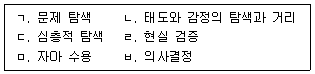
5. 직업상담사의 역할이 아닌 것은?
6. 특성-요인 직업상담에서 일련의 관련 있는 또는 관련 없는 사실들로부터 일관된 의미를 논리적으로 파악하여 문제를 하나씩 해결하는 과정은?
7. 직업상담을 위해 면담을 하는 중 즉시성(immediacy)을 사용하기에 적합하지 않은 경우는?
8. 게슈탈트 이론에 관한 설명으로 옳은 것을 모두 고른 것은?
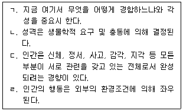
9. 직업카드 분류로 살펴보기에 가장 적합한 개인의 특성은?
10. 6개의 생각하는 모자(sixthinking hats) 기법에서 사용하는 모자 색깔이 아닌 것은?
11. 상담사의 윤리적 태도와 행동으로 옳은 것은?
12. 실존주의 상담에 관한 설명으로 틀린 것은?
13. 개방적 질문의 형태에 가장 거리가 먼 것은?
14. 일반적으로 상담자가 갖추어야 할 기법 중 내담자가 전달하려는 내용에서 한 걸음 더 나아가 그 내면적 감정에 대해 반영하는 것은?
15. 현실치료적 집단상담의 절차와 가장 거리가 먼 것은?
16. 체계적 둔감화를 주로 사용하는 상담기법은?
17. 사이버 직업상담에서 답변을 작성할 때 고려해야 할 사항으로 가장 거리가 먼 것은?
18. 콜브(Kolb)의 학습형태검사(LSI)에서 사람에 대한 관심은 적은 반면 추상적 개념에 많은 관심을 두는 사고형은?
19. 상담이론과 상담목표가 잘못 짝지어진 것은?
20. 직업상담의 목적에 해당하지 않는 것은?
2과목: 직업심리학
21. 직업상담에 사용되는 질적 측정도구가 아닌 것은?
22. 직무 스트레스를 조절하는 변인과 가장 거리가 먼 것은?
23. 검사 점수의 오차를 발생시키는 수검자 요인과 가장 거리가 먼 것은?
24. 어떤 직업적성검사의 신뢰도 계수가 1.0 이면 그 검사의 타당도 계수는?
25. 직업발달에 관한 특성-요인의 종합적인 결과를 토대로 Klein과 Weiner 등이 내린 결론과 가장 거리가 먼 것은?
26. 직업흥미검사에 대한 설명으로 틀린 것은?
27. 심리검사 해석 시 주의사항으로 틀린 것은?
28. 작업자 중심의 직무분석에 관한 설명으로 옳지 않은 것은?(문제 오류로 가답안 발표시 2번으로 발표되었지만 확정답안 발표시 1, 2번이 정답처리 되었습니다. 여기서는 가답안인 2번을 누르시면 정답 처리 됩니다.)
29. 직업적응이론의 적응유형 변인 중 적응행동 과정에서 나타나는 적응의 시작과 종료의 지속기간을 나타내는 것은?
30. 사회학습이론에 기반한 진로발달 과정의 요인으로 다음 사례와 밀접하게 관련 있는 것은?
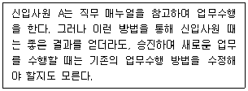
31. 직무 스트레스에 관한 설명으로 틀린 것은?
32. 성격의 5요인(Big Five)에 해당하지 않는 것은?
33. 다음 사례에서 A에게 해당하는 홀랜드(Holland)의 직업성격 유형은?
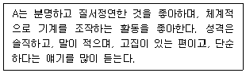
34. 데이비스와 롭퀘스트(Davis & Lofquist)의 직업적응이론에서 적응양식의 차원에 해당하지 않는 것은?
35. Super의 진로발단단계 중 결정화, 구체화, 실행 등과 같은 과업이 수행되는 단계는?
36. 로(Roe)의 욕구이론에 관한 설명으로 옳지 않은 것은?
37. 자신의 직무나 직무경험에 대한 평가로부터 비롯되는 유쾌하거나 정적인 감정 상태는?
38. 다음 설명에 해당하는 행동특성을 바르게 나타낸 것은?
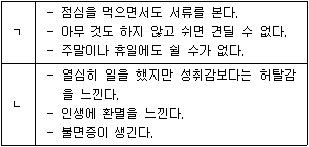
39. 가치중심적 진로접근모형의 명제에 관한 설명으로 틀린 것은?
40. 다음 중 조직에서 직원의 경력개발을 위해 사용하는 프로그램과 가장 거리가 먼 것은?
3과목: 직업정보론
41. 다음은 워크넷에서 제공하는 성인을 위한 직업적응검사 중 무엇에 관한 설명인가?
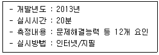
42. 직업상담시 제공하는 직업정보의 기능과 역할에 대한 설명으로 틀린 것은?
43. 워크넷에서 제공하는 채용정보 중 기업형태별 검색에 해당하지 않는 것은?
44. 제10차 한국표준산업분류의 산업결정방법에 관한 설명으로 틀린 것은?
45. 고용안전장려금(워라밸일자리 장려금)에 관한 설명으로 틀린 것은?
46. 한국표준직업분류(2017)에서 포괄적인 업무에 대해 적용하는 직업분류 원칙을 순서대로 나열한 것은?
47. 사업주 직업능력개발훈련 수행기관 중 '전국 고용센터'의 업무에 해당하지 않는 것은?
48. 공공직업정보의 일반적인 특성에 대한 설명으로 틀린 것은?
49. 다음은 한국직업사전의 부가직업정보(작업강도) 중 무엇에 관한 설명인가?
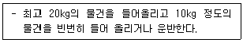
50. 국민내일배움카드제의 직업능력개발계좌의 발급 대상에 해당하는 자는?
51. 직업정보를 가공할 때 유의해야 할 사항으로 틀린 것은?
52. 한국직업전망(2019)의 향후 10년간 직업별 일자리 전망 결과 '증가'가 예상되는 직업에 해당하지 않는 것은?
53. 건설기계설비기사, 공조냉동기계기사, 승강기기사 자격이 공통으로 해당되는 직무분야는?
54. 워크넷에서 제공하는 학과정보 중 공학계열에 해당하는 것은?
55. 직업정보의 일반적인 정보관리순서로 가장 적합한 것은?
56. 제10차 한국표준산업분류의 대분류 중 제조업 정의에 관한 설명으로 틀린 것은?
57. 직업정보 제공에 관한 설명으로 옳은 것은?
58. 국가기술자격 중 응시자격의 제한이 없는 서비스분야는?
59. 한국표준직업분류(2017)의 대분류 9에 해당하는 것은?
60. 제10차 한국표준산업분류의 적용원칙에 관한 설명으로 틀린 것은?
4과목: 노동시장론
61. 우리나라 기업의 노사협의회에서 다루고 있지 않은 사항은?
62. 실업률을 낮추기 위한 대책과 가장 거리가 먼 것은?
63. 우리나라에 10개의 야구공 생산업체가 있다. 야구공은 개당 1000원에 거래되고 있다. 각 기업의 야구공 생산함수와 노동의 한계생산은 다음과 같다. 우리나라에 야구공을 만드는 기술을 가진 근로자가 500명 있으며, 이들의 노동공급이 완전비탄력적이고 야구공의 가격은 일정하다고 할 때, 균형임금수준은 얼마인가?
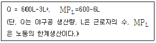
64. 최종생산물이 수요자에 의하여 수요되기 때문에 그 최종생산물을 생산하는 데 투입되는 노동이 수요된다고 할 때 이러한 수요를 무엇이라고 하는가?
65. 합리적인 임금체계가 갖추어야 할 기능과 가장 거리가 먼 것은?
66. 던롭(Dunlop)이 노사관계를 규제하는 여건 혹은 환경으로 지적한 사항이 아닌 것은?
67. 다음 표에서 실업률은?
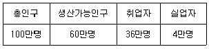
68. 필립스곡선은 어떤 변수 간의 관계를 설명하는 것인가?
69. 다음 중 최저임금제 도입의 직접적인 목적과 가장 거리가 먼 것은?
70. 다음 중 기업들이 기업내의 승진정체에 대응하여 도입하고 있는 제도와 가장 거리가 먼 것은?
71. 다음 중 내부노동시장의 특징과 가장 거리가 먼 것은?
72. A산업의 평균임금이 B산업보다 높을 경우 그 이유와 가장 거리가 먼 것은?
73. 노동공급에 관한 설명으로 틀린 것은?
74. 다음의 현상을 설명하는 개념은?
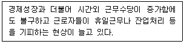
75. 임금체계의 공평성(equity)에 관한 설명으로 옳은 것은?
76. 다음 중 마찰적 실업에 관한 설명으로 옳은 것은?
77. 다음 중 노동조합의 조직률을 하락시키는 요인과 가장 거리가 먼 것은?
78. 파업을 설명하는 힉스(J. R. Hicks)의 단체교섭모형에 관한 설명으로 틀린 것은?
79. 노동수요의 탄력성 결정요인이 아닌 것은?
80. 다음 중 노동조합이 조합원의 확대와 사용자와의 교섭에서 가장 불리하다고 볼 수 있는 숍(shop)제도는?
5과목: 노동관계법규
81. 근로기준법령상 상시 10명 이상의 근로자를 사용하는 사용자가 취업규칙을 작성하여 고용노동부장관에게 신고해야 하는 사항이 아닌 것은?
82. 헌법 제32조에 관한 설명으로 옳지 않은 것은?
83. 고용상 연령차별금지 및 고령자고용촉진에 관한 법령성 용어정의에 관한 설명으로 틀린 것은?
84. 남녀고용평등과 일·가정 양립 지원에 관한 법률상 남녀고용평등 실현과 일·가정의 양립에 관한 기본계획에 포함되어야 할 사항을 모두 고른 것은?
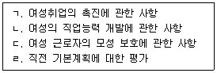
85. 근로기준법령상 용어정의에 관한 설명으로 틀린 것은?
86. 근로자직업능력개발법령상 직업능력개발훈련이 중요시되어야 할 대상으로 명시되지 않은 것은?
87. 근로자직업능력개발법령상 다음은 어떤 훈련방법에 관한 설명인가?
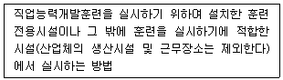
88. 고용보험법령상 ( )에 들어갈 숫자로 옳은 것은?
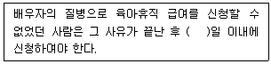
89. 근로기준법상 임금에 대한 설명으로 틀린 것은?
90. 고용정책 기본법에 대한 설명으로 틀린 것은?
91. 기간제 및 단시간근로자 보호 등에 관한 법령상 적용범위에 관한 설명으로 틀린 것은?
92. 남녀고용평등과 일·가정 양립지원에 관한 법령에 규정된 내용으로 틀린 것은?
93. 개인정보보호법령상 개인정보 보호위원회(이하 “보호위원회”라 한다)에 관한 설명으로 틀린 것은?(문제 오류로 가답안 발표시 2번으로 발표되었지만 확정답안 발표시 1, 2번이 정답처리 되었습니다. 여기서는 가답안인 2번을 누르시면 정답 처리 됩니다.)
94. 고용상 연령차별금지 및 고령자고용촉진에 관한 법령상 정년에 대한 설명으로 틀린 것은?
95. 고용보험법령상 피보험자격의 상실일에 해당하지 않는 것은?
96. 고용정책 기본법령상 고용정책심의회에 관한 설명으로 틀린 것은?
97. 남녀고용평등과 일·가정 양립지원에 관한 법령상 육아휴직 기간에 대한 설명으로 틀린 것은?
98. 직업안전법령상 직업소개업과 겸업이 금지되는 사업이 아닌 것은?
99. 고용보험법령상 용어정의에 관한 설명으로 틀린 것은?
100. 직업안정법에 관한 설명으로 틀린 것은?